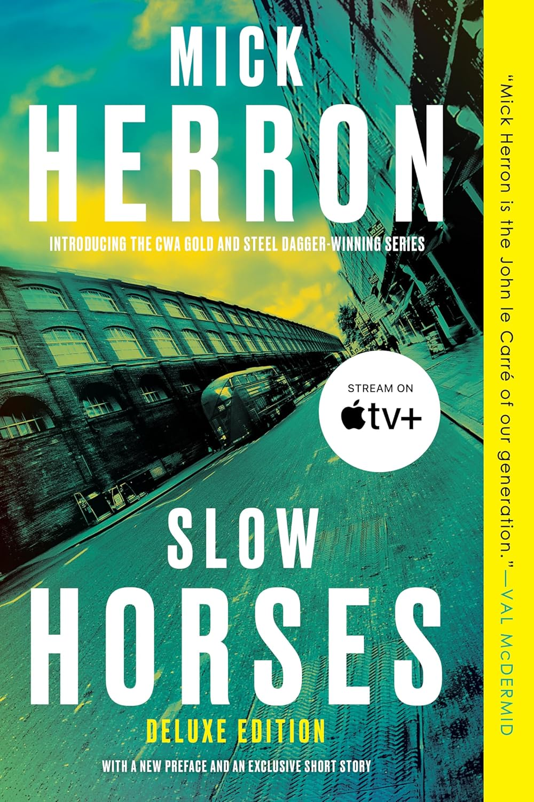

"Slow Horses"
- Read on 2025-07-16
- Rating: ️️️️️
- Format: 🎧 (10 hours 46 minutes)
I had no clue what this book was about before I started it. It's a book involving espionage, and would probably be classified as a thriller. . Mick Herron, the author, builds the characters slowly, and sometimes in different threads. At one point in the book, I was completely lost - it felt like a leap had been taken that I totally missed, when in reality the author was going to creatively fill in the leap he had taken. I don't know if the series continues in this style. I'd be interested in reading more in the series, but with the backlog I have, I don't know if/when I'd get to it. There was a fair bit of language in this book, but it sure painted a picture of the characters. This book is a great setup for a series.